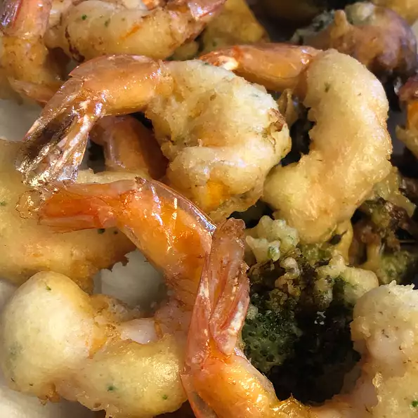

Tempura for Karolina

Description
Serve these crisp, fried shrimp with a hot mustard sauce or sweet & sour sauce. The tempura batter may be used for other recipes. Try it with vegetables.
- ½ cup rice wine
- ¼ teaspoon salt
- ½ pound fresh shrimp, peeled and deveined
- 2 quarts oil for deep frying
- ¼ cup all-purpose flour
- ⅓ cup ice water
- ¼ cup cornstarch
- 1 egg yolk
- >¼ teaspoon salt
- ¼ teaspoon white sugar
- teaspoon shortening
- ½ teaspoon baking powder
Steps
- In a medium bowl, mix rice wine and salt. Place shrimp into the mixture. Cover and marinate in the refrigerator at least 20 minutes.
- Heat oil in deep-fryer or large wok to 375 degrees F (190 degrees C).
- In a medium bowl, mix together all-purpose flour, ice water, cornstarch, egg yolk, salt, white sugar, shortening and baking powder.
- One at a time, dip shrimp into the flour mixture to coat. Carefully place a few shrimp at a time in the hot oil. Deep fry until golden brown on all sides, about 1 1/2 minutes. Use a slotted spoon to remove from oil. Drain on paper towels. Serve warm.